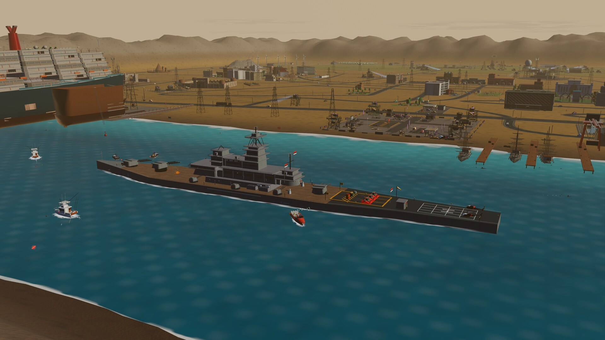

The campaign
Raise the colors. Raise a base.

Spring — the Tondbad coast
THE MUTINY
The Simorgh cannot win this war alone. Dead abeam her anchorage stands a regime installation the war already chewed through — ruins in their colors, waiting for ours. Ferry the builders, sling the block tarps, and the crew restores it roof by roof. When the third roof goes on, the Simorgh opens the war book: nine operations across the Parsava Coast. Blind the Marshal, cut his power, bring his prisoners home, and level Forward Command. By spring's end, the coast is ours.
Read the war book ↓